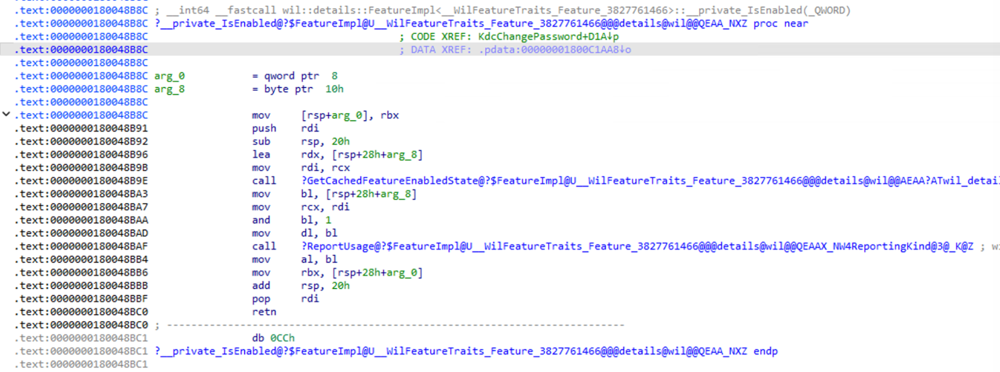
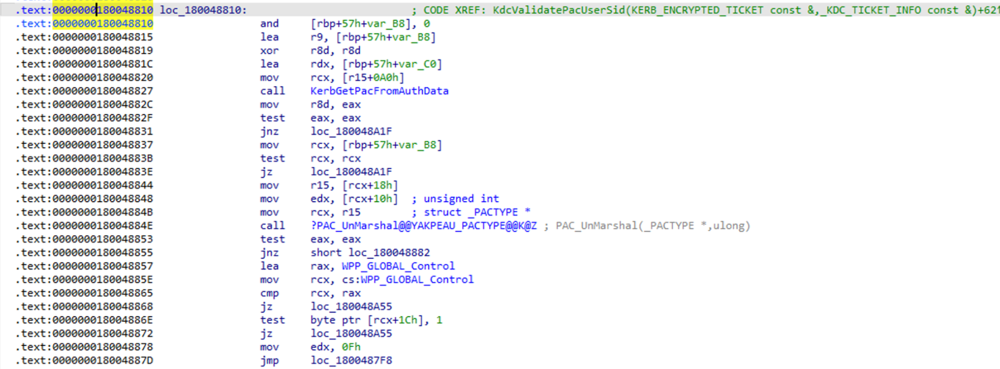
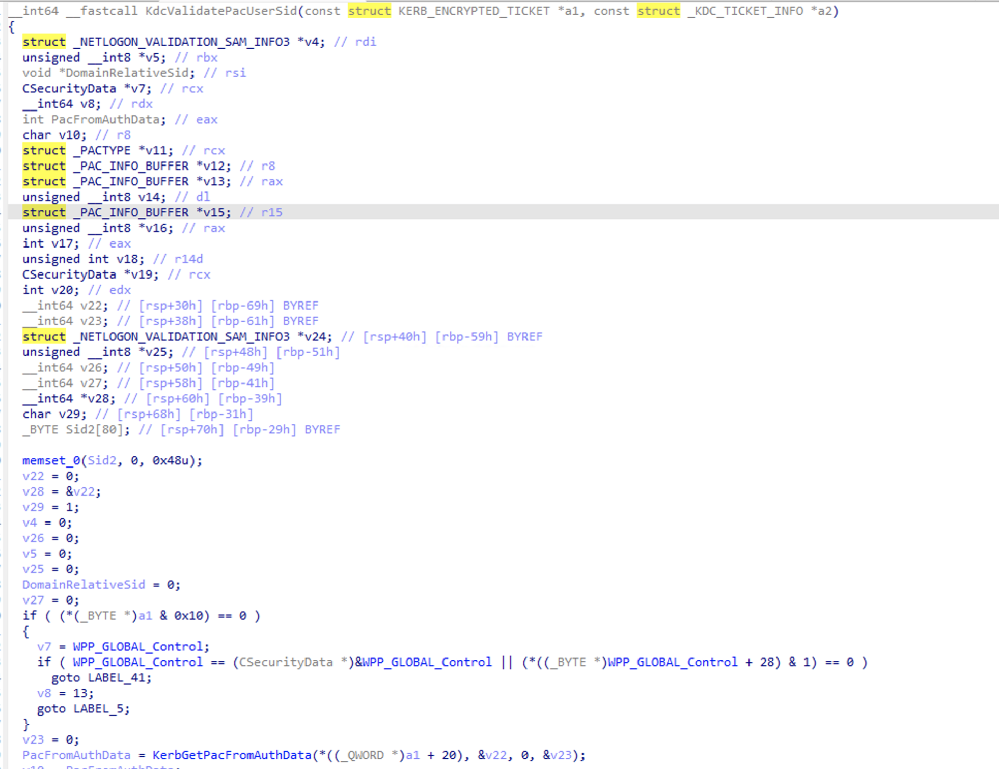
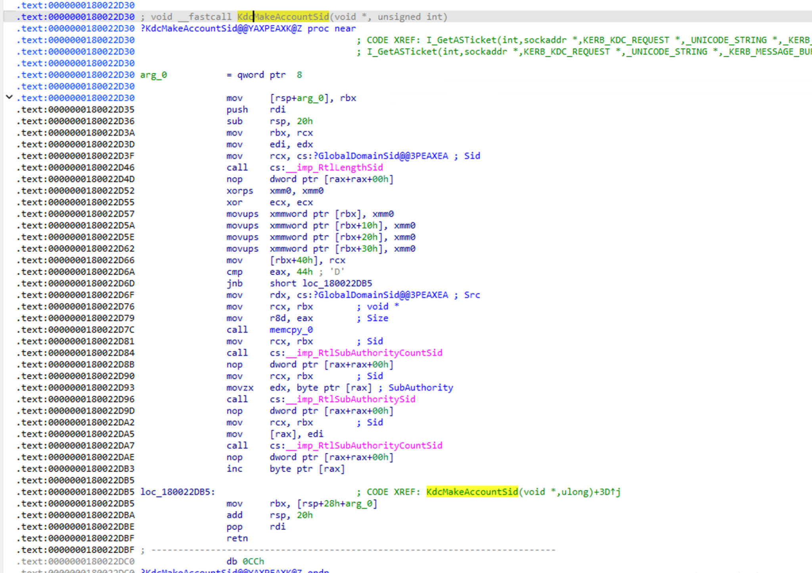
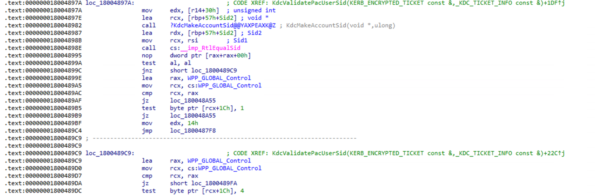

Reverse Engineering Microsoft’s kdcsvc.dll Patch: Crafting ResetNightmare Weapon 1
Windows Internals · Kerberos · Reverse Engineering

The starting point: ResetNightmare
ResetNightmare, CVE-2026-27912, was discovered by Shai Laron, a researcher at Semperis (@SemperisTech on X/Twitter). To analyze the identity switch between ticket issuance and consumption, I reproduced the public PoC in a controlled domain.
To follow that transition from inside the KDC, I trace the credential into KdcChangePassword. The comparison is limited to two Windows Server 2022 samples, kdcsvc.dll 20348.4893 before the fix and 20348.5020 after it. The goal is to locate the block Microsoft added and reconstruct the relationship it restores between the ticket and the resolved account.
Tick Tack Ticket
The session begins as jellybeelab\rn-low. The client uses the credentials of rn-controlled, an account whose password I know and whose userPrincipalName I can modify. The target is rn-target, a different account and a member of Domain Admins, whose original password I do not know.
I temporarily assign rn-target as the UPN of rn-controlled. While the alias remains active, I send an AS-REQ for kadmin/changepw with an NT-ENTERPRISE cname. The KDC authenticates the credentials of rn-controlled and issues the ticket. I remove the UPN before presenting that credential over TCP/464.
TCP/464 returns kpasswd = 0x0000. The new password then opens a session as jellybeelab\rn-target. The credential originated from rn-controlled, but the password change landed on rn-target.
rn-target.The identity switch between issuance and consumption
During issuance, the temporary UPN makes rn-target resolve to rn-controlled. During consumption, the alias no longer exists and the same name resolves to the real rn-target account. The name remains inside the ticket, but the associated Active Directory object changes.

The credential does not pass through the TGS path before reaching kpasswd. That detail places the search inside KdcChangePassword, not in the checks applied while processing a TGS-REQ.
The credential enters KdcChangePassword
The PoC requests kadmin/changepw directly through an AS-REQ. It then presents the ticket inside an AP-REQ and sends the new password in KRB-PRIV over TCP/464, following RFC 3244.
ChangePasswdData contains newpasswd and omits both targname and targrealm. The request enters the CHANGE operation, where the authenticated account and the modified account must be the same. Cryptographic verification accepts the ticket, then KdcChangePassword resolves the name again and prepares the token that authorizes the operation.

The ticket retains one SID, the directory returns another
The PAC retains the identity authenticated during issuance. Its Logon Information buffer contains the SID built from the domain and the RID of rn-controlled. By contrast, resolving the cname during consumption returns the account that Active Directory associates with that name at that moment.
The PAC signature protects the first SID. It does not freeze later name resolution. The patch must compare both identities before the KDC builds the token.
The exact patch location: 20348.4893 → 20348.5020
KB5078766 identifies build 20348.4893, while KB5082142 identifies 20348.5020. The latter is the April update that fixes ResetNightmare in Windows Server 2022. The comparison begins in KdcChangePassword. From there, I trace the path KdcNormalize takes after returning success in both builds, until it reaches KerbCreateTokenFromTicketForKdc.
20348.4893: the check does not exist
In 20348.4893, KdcNormalize ends at 0x18007AD4E. A zero return value jumps to 0x18007AD98, the branch that directly prepares the token arguments.

KdcNormalize in 20348.4893.KdcNormalize return path.text:000000018007AD4E call KdcNormalize
.text:000000018007AD53 mov [rbp+3F0h+var_470], eax
.text:000000018007AD56 test eax, eax
.text:000000018007AD58 jz short loc_18007AD98From 0x18007AD98 through 0x18007AE51, the function copies fields and places arguments in registers and on the stack. No other call instruction appears. The next call is KerbCreateTokenFromTicketForKdc at 0x18007AE55.
.text:000000018007AD98 loc_18007AD98:
.text:000000018007AD98 mov eax, dword ptr [rbp+3F0h+var_388+0Ch]
.text:000000018007AD9B lea rcx, [rbp+3F0h+var_440]
.text:000000018007AD9F mov r9, qword ptr [rbp+3F0h+var_420]
.text:000000018007ADA3 xor edx, edx
.text:000000018007ADA5 mov r8, qword ptr [rbp+3F0h+var_460]
.text:000000018007ADA9 mov dword ptr [rbp+3F0h+var_3E0], eax
.text:000000018007ADAC mov eax, dword ptr [rbp+3F0h+var_378]
.text:000000018007ADAF mov [rbp+3F0h+var_3D8], eax
.text:000000018007ADB2 mov rax, qword ptr [rbp+3F0h+var_378+8]
.text:000000018007ADB9 mov [rbp+3F0h+var_3D0], rax
.text:000000018007ADBD mov eax, dword ptr [rbp+3F0h+var_3C0+0Ch]
.text:000000018007ADC0 mov dword ptr [rbp+3F0h+var_458], eax
.text:000000018007ADC3 mov eax, dword ptr [rbp+3F0h+var_3B0]
.text:000000018007ADC6 mov dword ptr [rbp+3F0h+var_458+8], eax
.text:000000018007ADC9 mov rax, qword ptr [rbp+3F0h+var_3B0+8]
.text:000000018007ADCD mov [rsp-8+arg_70], r15
.text:000000018007ADD2 mov [rbp+3F0h+var_448], rax
.text:000000018007ADD6 lea rax, [rbp+3F0h+var_348]
.text:000000018007ADDD mov [rsp-8+arg_68], r15
.text:000000018007ADE2 mov [rsp-8+arg_60], rax
.text:000000018007ADE7 lea rax, [rbp+3F0h+var_358]
.text:000000018007ADEE mov [rsp-8+arg_58], rax
.text:000000018007ADF3 lea rax, [rbp+3F0h+var_368]
.text:000000018007ADFA mov [rsp-8+arg_50], rax
.text:000000018007ADFF lea rax, [rbp+3F0h+Handle]
.text:000000018007AE03 mov [rsp-8+arg_48], rax
.text:000000018007AE08 lea rax, [rbp+3F0h+P]
.text:000000018007AE0C mov [rsp-8+Table], rax
.text:000000018007AE11 lea rax, [rbp+3F0h+var_440]
.text:000000018007AE15 mov [rsp-8+arg_38], rax
.text:000000018007AE1A lea rax, [rbp+3F0h+var_458]
.text:000000018007AE1E mov qword ptr [rsp-8+arg_30], rax
.text:000000018007AE24 lea eax, DomainName2
.text:000000018007AE2A mov qword ptr [rsp-8+arg_28], rax
.text:000000018007AE2F lea rax, [rbp+3F0h+var_3E0]
.text:000000018007AE33 mov [rsp-8+arg_20], rax
.text:000000018007AE38 mov dword ptr [rsp-8+arg_18], r15d
.text:000000018007AE3D mov [rbp+3F0h+var_440], 3E5h
.text:000000018007AE45 mov dword ptr [rbp+3F0h+var_3E0+4], r15d
.text:000000018007AE49 mov [rbp+3F0h+var_3D4], r15d
.text:000000018007AE4D mov dword ptr [rbp+3F0h+var_458+4], r15d
.text:000000018007AE51 mov dword ptr [rbp+3F0h+var_458+0Ch], r15d
.text:000000018007AE55 call cs:__imp_KerbCreateTokenFromTicketForKdc_0
The resolved account is already available, as are the ticket and its PAC. The earlier build passes both contexts into token creation without comparing their SIDs. This is the vulnerable fragment.
20348.5020: validation before token creation
In 20348.5020, Microsoft fills that same interval with a new block. It first queries Feature_3827761466, then checks the byte retained in sil. When the feature is enabled and that byte is zero, execution enters KdcValidatePacUserSid. This block does not reveal where the byte comes from, so I do not assign it a more specific role.

20348.5020..text:000000018007ADB3 lea rcx, Feature_3827761466
.text:000000018007ADBA call Feature_3827761466::__private_IsEnabled
.text:000000018007ADBF mov sil, byte ptr [rbp+var_46C]
.text:000000018007ADC3 test al, al
.text:000000018007ADC5 jz short loc_18007ADED
.text:000000018007ADC7 test sil, sil
.text:000000018007ADCA jnz short loc_18007ADED
.text:000000018007ADCC mov rcx, [rbp+var_460]
.text:000000018007ADD0 lea rdx, [rbp+var_320]
.text:000000018007ADD7 call KdcValidatePacUserSid
.text:000000018007ADDC mov [rbp+var_470], eax
.text:000000018007ADDF test eax, eax
.text:000000018007ADE1 jz short loc_18007ADED
.text:000000018007ADE3 mov ebx, 0C0000022h
.text:000000018007ADE8 jmp loc_18007A8DF
.text:000000018007ADED loc_18007ADED:If KdcValidatePacUserSid returns zero, execution reaches 0x18007ADED and continues. Any other return value loads 0xC0000022, STATUS_ACCESS_DENIED, and leaves the path before token creation.
The SID retained in the PAC
KdcValidatePacUserSid opens the authorization data, locates the PAC, and selects buffer type 1, Logon Information. It retrieves LogonDomainId and UserId from that buffer, then builds the SID of the account authenticated during issuance.

mov edx, 1
call PAC_Find
...
call PAC_UnmarshallValidationInfo
mov edx, [rdi+94h]
mov rcx, [rdi+0E0h]
call PAC_MakeDomainRelativeSid
mov rsi, raxThe SID of the resolved account
The other input to KdcValidatePacUserSid is _KDC_TICKET_INFO. The function signature clearly separates the encrypted ticket from the resolved account context.

At 0x18004897A, the function reads the value at _KDC_TICKET_INFO + 0x30 and passes it to KdcMakeAccountSid. The function copies the domain SID and appends that RID as the final subauthority.

The comparison that closes the flaw
rcx receives the SID reconstructed from the PAC. rdx points to the SID created from the resolved account. RtlEqualSid compares both values. A nonzero result continues along the success branch, while zero returns the error that KdcChangePassword converts into STATUS_ACCESS_DENIED.
.text:000000018004897A mov edx, [r14+30h]
.text:000000018004897E lea rcx, [rbp+57h+Sid2]
.text:0000000180048982 call KdcMakeAccountSid
.text:0000000180048987 lea rdx, [rbp+57h+Sid2]
.text:000000018004898B mov rcx, rsi
.text:000000018004898E call cs:__imp_RtlEqualSid
.text:0000000180048995 nop dword ptr [rax+rax+00h]
.text:000000018004899A test al, al
.text:000000018004899C jnz short loc_1800489C9
In 20348.4893, the resolved name reached token creation without being tied to the SID in the PAC. In 20348.5020, the same path must first pass this comparison. Microsoft preserves name resolution and blocks its use when it leads to a different account.